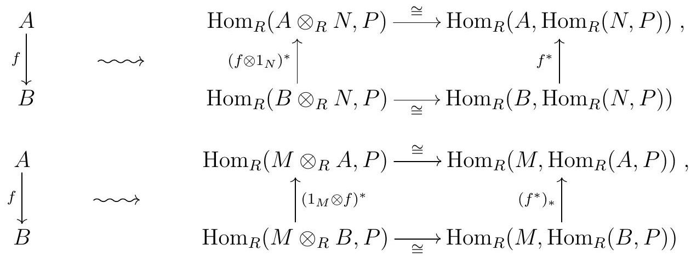
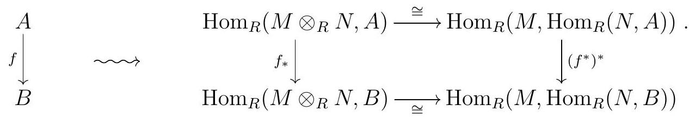

Section 3.4 Hom-Tensor Adjunction
The Hom and tensor functors are closely related. First, we note that \(\operatorname{Hom}_{R}(A, B)\) can be a module over a ring \(S\) when \(A\) or \(B\) have a bimodule structure.
Exercise 56. Let \(R\) and \(S\) be rings.
- If \(A\) is an \((R, S)\)-bimodule and \(B\) is a left \(R\)-module, then \(\operatorname{Hom}_{R}(A, B)\) has a left \(S\)-module structure via \((s \cdot f)(a)=f(a s)\text{.}\)
- If \(A\) is an \((R, S)\)-bimodule and \(B\) is a right \(S\)-module, then \(\operatorname{Hom}_{R}(A, B)\) has a right \(R\)-module structure via \((f \cdot r)(a)=f(r a)\text{.}\)
- If \(B\) is an \((S, R)\)-bimodule and \(A\) is a right \(R\)-module, then \(\operatorname{Hom}_{R}(A, B)\) has a left \(S\)-module structure via \((s \cdot f)(a)=s f(a)\text{.}\)
- If \(B\) is an \((S, R)\)-bimodule and \(A\) is a left \(S\)-module, then \(\operatorname{Hom}_{R}(A, B)\) has a right \(R\)-module structure via \((f \cdot r)(a)=f(a) r\text{.}\)
These structures can be a bit confusing at first - especially since we have left module structures written on the right and vice-versa. While the exercise is not difficult, it can be extremely enlightening - we strongly recommend the reader tries their hand at the details.
The following statements are known as Hom-tensor adjunction - and as we will see, they do encode an adjunction of functors.
Theorem 3.79.
Theorem 3.58. Let \(R\) and \(S\) be rings. Assume that
- \(A\) is a right \(R\)-module,
- \(B\) is an \((R, S)\)-bimodule, and
- \(C\) is a right \(S\)-module.
There is a natural isomorphism of abelian groups
\begin{equation*}
\operatorname{Hom}_{S}\left(A \otimes_{R} B, C\right) \cong \operatorname{Hom}_{R}\left(A, \operatorname{Hom}_{S}(B, C)\right)
\end{equation*}
If \(A\) also has a \((T, R)\)-bimodule structure, or \(C\) has a \((T, S)\)-bimodule structure, then this is an isomorphism of (left or right, respectively) \(T\)-modules.
Theorem 3.80.
Theorem 3.59. Let \(R\) and \(S\) be rings. Assume that
- \(A\) is a left \(R\)-module,
- \(B\) is an \((S, R)\)-bimodule, and
- \(C\) is a left \(S\)-module.
There is a natural isomorphism of abelian groups
\begin{equation*}
\operatorname{Hom}_{S}\left(B \otimes_{R} A, C\right) \cong \operatorname{Hom}_{R}\left(A, \operatorname{Hom}_{S}(B, C)\right)
\end{equation*}
We leave the details to the reader, and prove the case when the underlying rings are commutative. First, let's do the case when \(R=S\text{.}\)
Theorem 3.81.
Theorem 3.60 (Hom-tensor adjunction I). Let \(R\) be a commutative ring and let \(M, N\text{,}\) and \(P\) be \(R\)-modules. There is an isomorphism of \(R\)-modules
\begin{equation*}
\operatorname{Hom}_{R}\left(M \otimes_{R} N, P\right) \cong \operatorname{Hom}_{R}\left(M, \operatorname{Hom}_{R}(N, P)\right)
\end{equation*}
that is natural on \(M, N\text{,}\) and \(P\text{.}\)
Proof.
Proof. The universal property of the tensor product says that to give an \(R\)-module homomorphism \(M \otimes_{R} N \longrightarrow P\) is the same as giving an \(R\)-bilinear map \(M \times N \longrightarrow P\text{.}\) Given such a bilinear map \(f\text{,}\) the map \(n \mapsto f(m \otimes n)\) is \(R\)-linear for each \(m \in M\text{,}\) so it defines an \(R\)-module homomorphism \(N \longrightarrow P\text{.}\) Now the assignment
\begin{equation*}
\begin{aligned}
& M \longrightarrow \operatorname{Hom}_{S}(N, P) \\
& m \longrightarrow(n \mapsto f(m \otimes n))
\end{aligned}
\end{equation*}
is \(R\)-linear, \(f\) is an \(R\)-module homomorphism, and \(m \mapsto m \otimes n\) is \(R\)-linear on \(m\text{.}\)
Conversely, given an \(R\)-module homomorphism \(f \in \operatorname{Hom}_{R}\left(M, \operatorname{Hom}_{R}(N, P)\right)\text{,}\) one can check (exercise!) that \((m, n) \mapsto f(m)(n)\) is an \(R\)-bilinear map, so it induces an \(R\)-module homomorphism \(M \otimes_{R} N \longrightarrow P\text{.}\) Moreover, the two constructions are inverse to each other.
So we have constructed a bijection of Hom-sets
\begin{equation*}
\begin{gathered}
\operatorname{Hom}_{R}\left(M \otimes_{R} N, P\right) \stackrel{\tau}{\longrightarrow} \operatorname{Hom}_{R}\left(M, \operatorname{Hom}_{R}(N, P)\right) . \\
f \longmapsto(m \mapsto(n \mapsto f(m \otimes n))) \\
(m \otimes n \mapsto g(m)(n)) \longleftrightarrow g
\end{gathered}
\end{equation*}
It's routine to check that both of these bijections are indeed homomorphisms of \(R\)-modules, so we leave it as an exercise.
Finally, naturality means we have the following commutative diagrams:

and

We leave checking these do indeed commute as an exercise.
Corollary 3.82.
Corollary 3.61 (Tensor and Hom are adjoint functors). Let \(R\) be a commutative ring, and \(M\) an \(R\)-module. The functor \(-\otimes_{R} M: R\)-Mod \(\longrightarrow R\)-Mod is left adjoint to the functor \(\operatorname{Hom}_{R}(M,-): R\)-Mod \(\longrightarrow R\)-Mod.
Proof.
Proof. The adjointness translates into the fact that for all \(R\)-modules \(N\) and \(P\) there is a bijection
\begin{equation*}
\operatorname{Hom}_{R}\left(N \otimes_{R} M, P\right) \cong \operatorname{Hom}_{R}\left(N, \operatorname{Hom}_{R}(M, P)\right)
\end{equation*}
which is natural on \(N\) and \(P\text{,}\) which is a corollary of Theorem 3.60.
Later, when we talk about more general abelian categories, we will see that this adjunction implies that Hom is left exact and that tensor is right exact; in fact, this is a more general fact about adjoint pairs. For now, we want to discuss a more general version of this Hom-tensor adjunction.
Theorem 3.83.
Theorem 3.62 (Hom-tensor adjunction II). Let \(f: R \rightarrow S\) be a ring homomorphism of commutative rings. Let \(M\) be an \(R\)-module, and \(P\) and \(N\) be \(S\)-modules. There is an isomorphism of abelian groups
\begin{equation*}
\operatorname{Hom}_{S}\left(M \otimes_{R} N, P\right) \cong \operatorname{Hom}_{R}\left(M, \operatorname{Hom}_{S}(N, P)\right) .
\end{equation*}
Moreover, this isomorphism is natural on \(M, N\text{,}\) and \(P\text{,}\) so it induces natural isomorphisms
- between \(\operatorname{Hom}_{S}\left(-\otimes_{R} N, P\right)\) and \(\operatorname{Hom}_{R}\left(-, \operatorname{Hom}_{S}(N, P)\right)\text{.}\)
- between \(\operatorname{Hom}_{S}\left(M \otimes_{R}-, P\right)\) and \(\operatorname{Hom}_{R}\left(M, \operatorname{Hom}_{S}(-, P)\right)\text{.}\)
- between \(\operatorname{Hom}_{S}\left(M \otimes_{R} N,-\right)\) and \(\operatorname{Hom}_{R}\left(M, \operatorname{Hom}_{S}(N,-)\right)\text{.}\)
Proof.
Proof. Consider the map
\begin{equation*}
\begin{array}{r}
\operatorname{Hom}_{S}\left(M \otimes_{R} N, P\right) \stackrel{\tau}{\longrightarrow} \operatorname{Hom}_{R}\left(M, \operatorname{Hom}_{S}(N, P)\right) \\
f \longmapsto m \mapsto(n \mapsto f(m \otimes n))
\end{array}
\end{equation*}
Fix \(f\text{.}\) For each \(m \in M\text{,}\) let \(\tau_{m}\) be the map \(N \longrightarrow P\) defined by \(\tau_{m}(n):=f(m \otimes n)\text{.}\) Note that \(\tau_{m}\) is indeed a homomorphism of \(S\)-modules, since it is the composition of two \(S\)-module maps, \(f\) and \(m \otimes_{R} \operatorname{id}_{N}\text{,}\) where \(m\) is the constant map \(M \longrightarrow M\) equal to \(m\text{.}\)
We should check that our proposed map \(\tau\) is indeed a map of abelian groups. It is immediate from the definition that \(\tau\) sends the 0-map to the 0-map. Moreover, given \(S\) module homomorphisms \(f, g: M \otimes N \longrightarrow P\text{,}\) and any \(n \in N\text{,}\) we have
\begin{equation*}
\begin{array}{rlr}
\tau_{m}(f+g)(n) & =(f+g)(m \otimes n) & \text { by definition } \\
& =f(m \otimes n)+g(m \otimes n) & \text { since } f \text { and } g \text { are } S \text {-module maps } \\
& =\tau_{m}(f)(n)+\tau_{m}(g)(n) & \text { by definition }
\end{array}
\end{equation*}
so \(\tau_{m}(f+g)=\tau_{m}(f)+\tau_{m}(g)\) for all \(m \in M\text{,}\) and thus \(\tau(f+g)=\tau(f)+\tau(g)\text{.}\)
Suppose that \(\tau(f)=0\text{.}\) Then for every \(m \in M\) and every \(n \in N\text{,}\)
\begin{equation*}
0=\tau(f)(m)(n)=\tau_{m}(f)(n)=f(m \otimes n)
\end{equation*}
so \(f\) vanishes at every simple tensor, and we must have \(f=0\text{.}\) On the other hand, if we are given \(g \in \operatorname{Hom}_{R}\left(M, \operatorname{Hom}_{S}(N, P)\right)\text{,}\) consider the map \(M \times N \longrightarrow P\) defined by \(\tilde{f}(m, n)=g(m)(n)\text{.}\) Since \(g\) is a homomorphism of \(R\)-modules, it is \(R\)-linear on \(m\text{.}\) Moreover, for each fixed \(m, g(m)\) is a homomorphism of \(S\)-modules, so in particular \(g(m)\) is \(R\)-linear. Together, these say that \(\tilde{f}\) is an \(R\)-bilinear map. Let \(f\) be the homomorphism of \(R\)-modules \(M \otimes_{R} N \longrightarrow P\) induced by \(\tilde{f}\text{.}\) By definition, \(f(m \otimes n)=\tilde{f}(m, n)=g(m)(n)\text{,}\) so \(\tau(f)=g\text{.}\) We conclude that \(\tau\) is a bijection.
We leave the statements about naturality as exercises.
Corollary 3.84.
Corollary 3.63 (Adjointness of restriction and extension of scalars). Let \(f R \longrightarrow S\) be \(a\) ring homomorphism. The restriction of scalars functor \(f^{*}: S\)-Mod \(\longrightarrow R\)-Mod is the right adjoint of the extension of scalars functor \(f_{*}: R\)-Mod \(\longrightarrow S\)-Mod.
Proof.
Proof. We need to show that for every \(R\)-module \(M\) and every \(S\)-module \(N\) there are bijections
\begin{equation*}
\operatorname{Hom}_{S}\left(f_{*}(M), N\right) \cong \operatorname{Hom}_{R}\left(M, f^{*}(N)\right)
\end{equation*}
which are natural on both \(M\) and \(N\text{.}\) By Theorem 3.62, we have natural bijections
\begin{equation*}
\operatorname{Hom}_{S}\left(M \otimes_{R} S, N\right) \cong \operatorname{Hom}_{R}\left(M, \operatorname{Hom}_{S}(S, N)\right)
\end{equation*}
The module \(M \otimes_{R} S\) is precisely \(f_{*}(M)\text{.}\) By Exercise \(38, \operatorname{Hom}_{S}(S, N) \cong N\) as an \(S\)-module. An isomorphism of \(S\)-modules \(\operatorname{Hom}_{S}(S, N) \longrightarrow N\) is in particular an \(R\)-linear map, and thus also an isomorphism of \(R\)-modules. So \(\operatorname{Hom}_{S}(S, N) \cong f^{*}(N)\) as \(R\)-modules. Therefore, the Hom-tensor adjuntion gives us the natural bijections we were looking for.
The idea is that restriction of scalars and extension of scalars are the most efficient ways of making an \(R\)-module out of an \(S\)-module, and vice-versa.